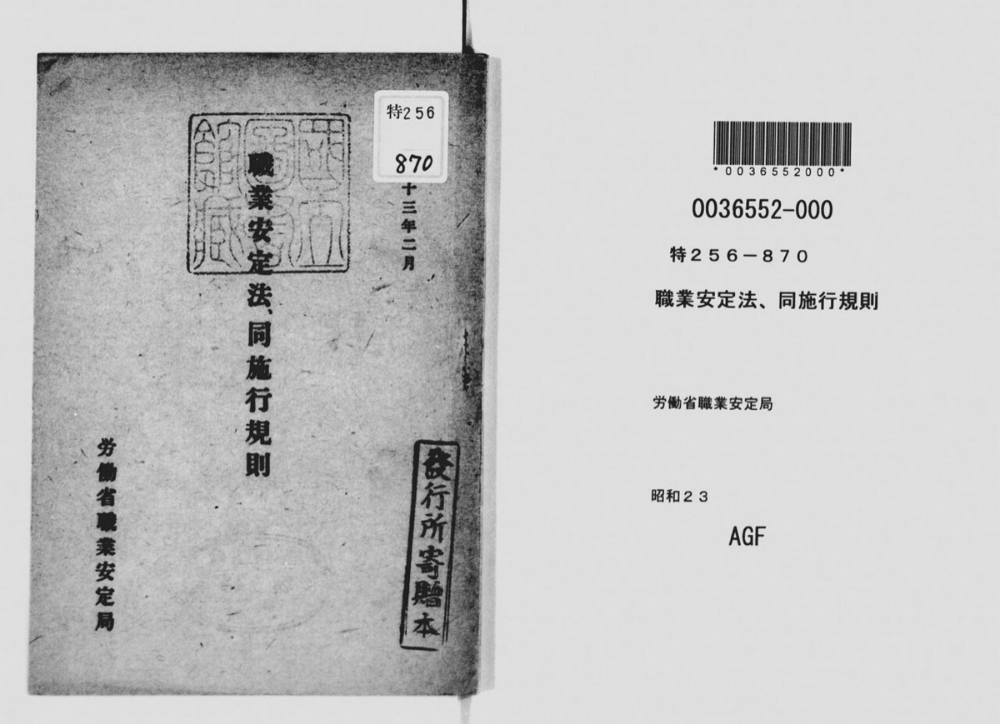
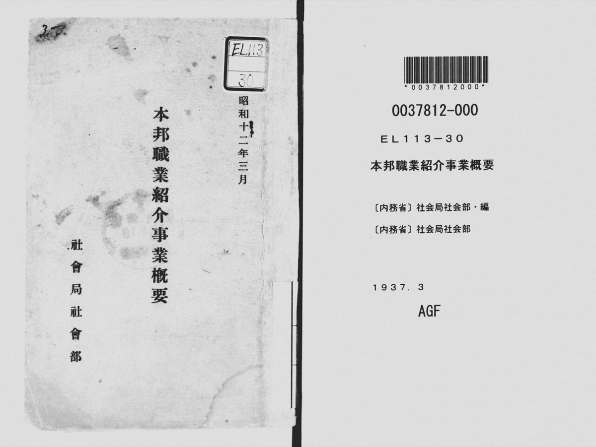
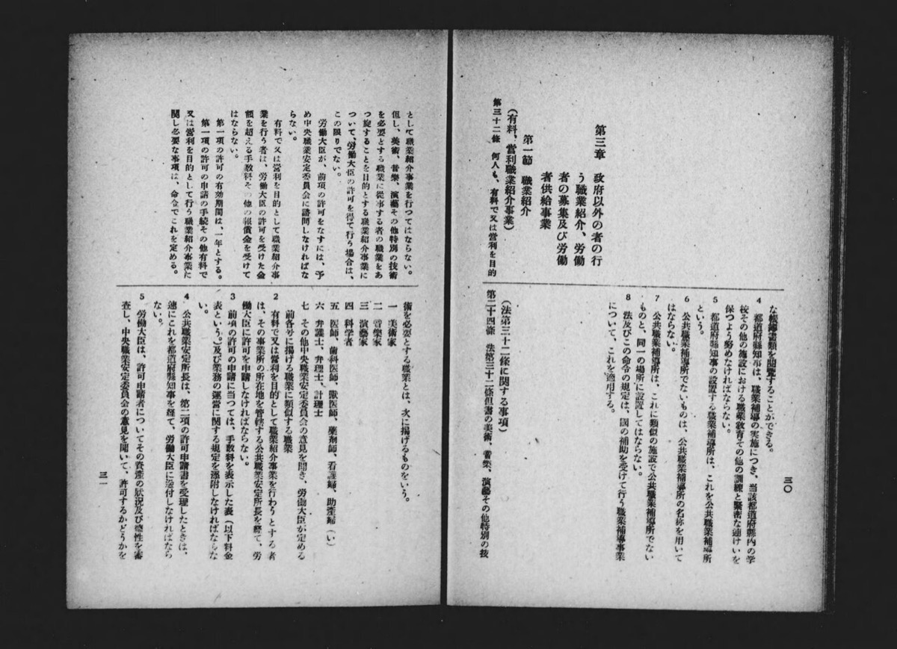
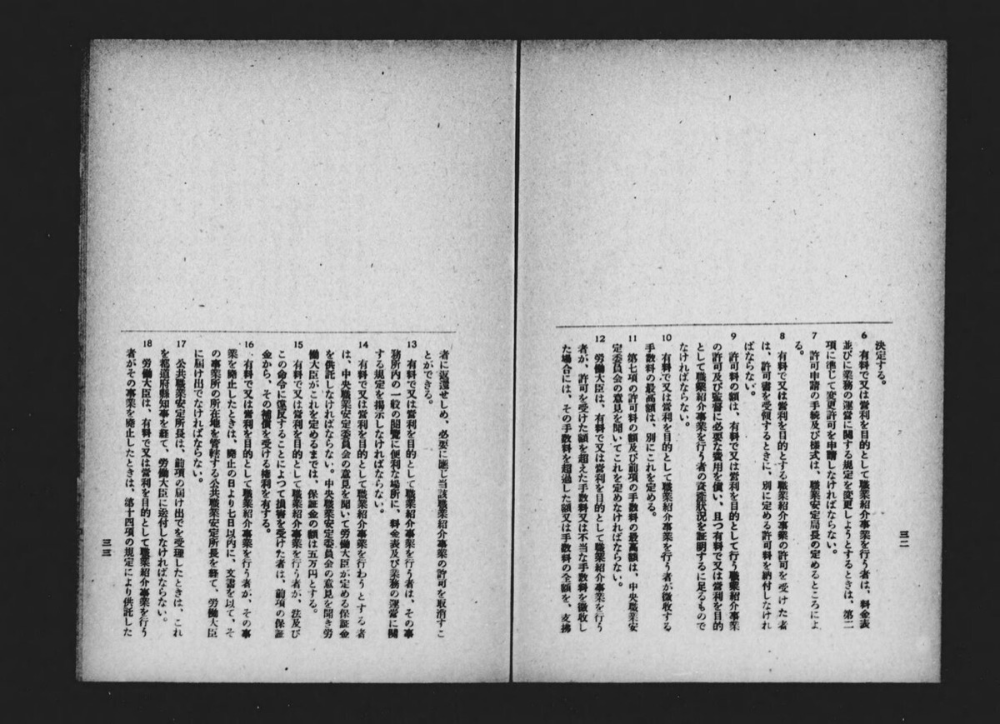

thesis学生起業M&Aexitシリアル起業
主張
読者と判断：学生起業の領域を親市場の売上規模で選ばない。公開exitの有無と、初期固定費（許認可・基準資産）と、買い手が在庫または実装チームとして取得できるかを先に見る。人材大型上場を学生1周目の到達点として読まない。2周目は1周目の売却額の大小だけでは上場到達を予測できない。
- 主張：学生1周目で開示付きexitが観測される領域は、有料職業紹介のような基準資産と職業経験要件を持つ許認可領域より、買い手がトラフィック在庫として取得できるメディア側に偏る。したがって親市場売上の大きい人材領域を学生1周目の到達点として選ぶと誤る。反証条件：STARTUP DB等の創業時年齢付きexit一覧で、在学中または卒業後2年以内の創業exitのうち有料職業紹介が3件以上を占める、またはメディア以外の許認可領域が過半を占めると一次集計で示される場合。判定：判定不能（確認できた在学中創業の開示例はメディア2件、有料職業紹介の学生創業で開示金額付き売却は0件。全母集団が無いため偏りの一般化はできない。ビジョナルは創業時年齢33歳で学生1周目の到達点ではない）。
- 主張：2周目の東証上場到達は1周目exit金額の大小では決まらず、売却後に買い手内部でM&Aに触れた経験の有無で分岐する。反証条件：同一指標（株式取得対価または推計企業価値のどちらか一方）で金額が比較でき、かつ2周目の成否が追える経路を5件以上集める。(1) その指標の金額順位と上場到達が一致する一次対応、または(2) 買い手内部のM&A記述がある経路が上場せず記述が無い経路が上場する一次対応、のいずれかが出る場合。判定：判定不能。本サンプルのCandle開示は全株式の取得対価12.5億円である。メディコマ開示は持分71%の譲渡対価約6.76億円と、そこから推計した企業価値約9.5億円である。指標が揃わない。株式取得対価どうしは持分割合が異なり大小比較不能である。推計企業価値どうしはメディコマ側がインタビュー報道・single-sourceの推計に依存し、同一確度の一次対応にならない。内部M&Aと上場の対照も経路3件に留まる。
分解：物理的制約（可処分時間、法人登記と口座開設の期間、有料職業紹介の基準資産と現金要件・職業紹介責任者の成年後3年以上の職業経験）。お金の流れ（初期売上までのリードタイム。広告・送客の粗利率。売掛回収。exit対価の現金／株式）。利得の帰属（買い手はメディア在庫または実装力、創業者は2周目の資金と信用、紹介・受託の顧客は供給の継続）。法と強制力（有料職業紹介許可。下請法。景表法。個人情報）。時間（在学中にexit可能か、売却後に買い手へ残る年数、2周目創業までの空白）。
判断：親市場売上で領域を選ぶ型は採らない。開示できた在学中創業exitはメディア2件に留まり、許認可領域への偏り命題は判定不能である。人材の大型時価総額（ビジョナル）は創業時年齢33歳であり、学生1周目の到達点ではない。2周目の上場到達を1周目金額の大小で予測する命題も、開示指標が揃わず経路も3件のため判定不能である。
AI受託の買収条件の詳細は既存の国内AIスタートアップM&A分析（2024-2026）に譲る。本ページは学生1周目の制約と、開示された2周目経路の対照に限定する。
許認可と固定費で領域を分けるConstraints Before Parent Markets
領域の軸は次の4つである。親市場の売上規模は軸にしない。
注：KPIと上表の「基準資産500万円／現金150万円」は事業所1か所の場合である。複数事業所では一律の下限ではない5。
主張1の入口制約。親市場売上ではなく、許可・基準資産・職業経験と、開示できたexitの有無で領域を分ける。




対照（学生起業の検証データではない）：ホワイトカラー人材紹介の市場規模は2024年度で4,490億円（矢野・調査会社発表）、有料職業紹介の手数料収入は令和6年度で約9,835億円（厚労省）である8,9。ビジョナルの時価総額は約3,443億円（2026-09-18、終値8,504円×発行済40,487,100株）である6,7。これらは人材市場の受容度を示す対照であり、学生1周目の到達可能性やexit件数の検証には使わない。BizReachの創業者は1976年生まれで、2009年のサービス開始時は33歳、前職は投資銀行と球団運営である10,11。親市場の売上（アプリ開発製品市場・インターネット広告費・非IT系BPO）も学生起業の売上母集団ではない。本ページの比較表からは除外する。
主張1の検証：開示exitと母集団の欠落Disclosed Exits, Missing Population
観測窓を2014〜2026年とし、金額または持分が一次情報で確認できる1周目exitを並べる。在学中創業に該当するのはCandleと終活ねっとの2件である。メディコマは職歴後創業の対照であり、学生起業の件数には数えない。
在学中創業の開示2件はいずれも、買い手がトラフィックまたは垂直ドメインの顧客接点を取得する取引である。対照のメディコマもメディア／ECである。AI受託は実装チームの取得（アクハイヤー）であり、学生限定ではない。有料職業紹介は基準資産と職業経験の両方が入口にある5。ここまでが確認事実である。「学生創業exit全体が低固定費領域に偏る」とは言えない。学生創業の全exit一覧が無いため、主張1の母集団命題は判定不能とする。判定に必要なデータは、創業時年齢付きの業態別exit一覧である。
EXIT環境の広い母集団として、INITIALは2025年のスタートアップ被買収・子会社化を167件、STARTUP DB系の集計は207件とする。件数は定義差でdisputedであり、創業時年齢の内訳は公開集計に含まれない17,18。通説の業種案内は「初期費用の低さ」と「市場ニーズ・成長性」で選ぶ型が一般的である26。本ページの判定軸は開示exitと許認可・基準資産であり、成長性の代理として親市場売上を並べない。
主張2の検証：金額・内部M&A・上場Exit Size, Buyer M&A, Listing
2周目を創業した3経路を対照する。金額は「株式取得対価」と「推計企業価値」を分けて書く。終活ねっとは金額非開示である。主張は「同一指標の金額大小ではなく、買い手内部のM&A経験の有無で上場が分岐する」という予測である。本サンプルでは指標が揃わないため、金額順位の検定には入れない。
主張2の観測対応。株式取得対価と推計企業価値を分けて示す。持分割合と確度が異なるため、金額の大小順位は付けない。上場到達と内部M&A記述の対応だけを並べる。
指標の分離と観測：株式取得対価ではCandle 12.5億円（100%）とメディコマ約6.76億円（71%）である。持分割合が異なるため大小比較不能とする。推計企業価値ではCandle 12.5億円（全株取得価額）とメディコマ約9.5億円（71%対価からの推計）を並べられる。ただし後者はインタビュー報道・single-sourceであり、一次開示どうしの同一指標比較にはならない。「金額が大きい経路が未上場で小さい経路が上場した」という大小命題は、本サンプルでは採らない。
上場到達の観測は次に限る。2周目で東証上場に至ったのはメディコマ経路のみである。同経路では売却後の買い手内部での複数回M&Aがインタビューと上場資料で述べられている3,15。金経路は残留が最長だが、その間のM&A実行は一次情報で確認できず、2周目は未上場である。岩崎経路は過半取得後に約1年5か月残留し、退任後に投資活動を経て2周目を創業した。未上場である22,23,24。金・岩崎経路の「M&A実行なし」は、公開一次情報で確認できなかったことを指す。不存在の証明ではない。
以上は経路3件である。金額の大小命題は指標不一致のため比較不能とし、採らない。内部M&A経験と上場分岐の因果命題も、経路3件と対照群の不足により判定不能とする。判定に必要なデータは、同一指標で金額比較できる経路5件以上と、内部M&Aの有無を適時開示または登記で照合できる対照である。
誰が得をするかWho Captures Value
- 上場・大企業の買い手：メディア在庫や実装力を、自社で育成する時間を買わずに取得する側が得をする。学生側の1周目exitは、買い手の在庫補充と創業者の2周目資金の交換である。
- 本サンプルで買い手内部のM&A記述がある創業者：佐上経路では、売却後の子会社経営と複数回M&Aが公開資料で述べられ、2周目はM&A仲介で上場した。利得の帰属を一般化する材料には足りない。
- 人材プラットフォーム（既に許可と信用がある側）：ビジョナルはBizReach売上801.2億円（2026年7月期）を計上し、時価総額は3,000億円台で取引される6,7,25。対照としての市場受容であり、学生1周目の到達点ではない。
- 得を測れない側：営業代行の学生起業について、公開の大型exitは本調査では特定できなかった。親市場のBPO数字で規模を補っても、創業者の現金化は測れない。
残っている問いOpen Questions
- 学生創業の全exit母集団（創業時年齢付き）は、業態別に何件か。 主張1の偏り命題を判定不能から出せる条件である。
- 同一指標（株式取得対価または推計企業価値）で金額比較でき、かつ2周目成否が追える経路は、本サンプル以外に何件あるか。買い手内部のM&A実行を適時開示や登記で追えるか。 主張2の金額命題と内部M&A命題を分けるための件数と対照群である。
- 金経路のクルーズ在籍中に、新規事業創出以外のM&A実行はあったか。 一次の適時開示では代表交代までしか追えない。「実行なし」は非開示と区別できない。
出典一覧Sources
- クルーズ株式会社 プレスリリース（2016年10月13日）Candle全株式取得（12億5,000万円） https://prtimes.jp/main/html/rd/p/000000240.000006324.html
- 合同会社DMM.com プレスリリース（2018年11月12日）終活ねっと株式51%取得 https://prtimes.jp/main/html/rd/p/000003199.000002581.html
- BigLife21 インタビュー「AI活用したM&Aマッチング…佐上峻作氏」（メディコマ譲渡条件、ベクトル在籍約1年半、M&A10数回。インタビュー報道・single-source） https://www.biglife21.com/ma/18750/
- クルーズ株式会社 適時開示（JPX開示、Candle取得価額1,250百万円） https://www2.jpx.co.jp/disc/21380/140120170209495637.pdf
- 三重労働局「有料職業紹介事業 許可要件（概要）」（基準資産500万円以上、現金・預金150万円以上、職業紹介責任者の職業経験） https://jsite.mhlw.go.jp/mie-roudoukyoku/content/contents/002201639.pdf
- トレーダーズ・ウェブ ビジョナル(4194) 株価時系列（2026年9月18日終値 8,504円） https://www.traders.co.jp/stocks/61_4194/historical/1
- ビジョナル株式会社「株式基本情報」（発行済株式総数 40,487,100株、2026年7月31日現在） https://www.visional.inc/ja/ir/stock/information.html
- 株式会社矢野経済研究所「人材ビジネス市場に関する調査を実施（2025年）」（ホワイトカラー人材紹介 4,490億円。調査会社発表・対照用） https://www.yano.co.jp/press-release/show/press_id/3942
- 厚生労働省「有料職業紹介事業に関する手数料収入の推移」（令和6年度 約9,835億円。対照用） https://www.mhlw.go.jp/content/11600000/001685251.pdf
- 『日本の人事部』インタビュー：南壮一郎さん（1976年生まれ、2009年4月にBizReach開設） https://jinjibu.jp/article/detl/topinterview/1314/
- ITmedia ビジネスオンライン「ビズリーチ社長が明かす創業秘話」（モルガン・スタンレー、楽天イーグルスを経て創業） https://www.itmedia.co.jp/business/articles/1701/17/news025.html
- M&A BANK Vol.121 金靖征氏インタビュー（東大3年・二十歳でCandle創業、2年半後に売却） https://ma-bank.jp/interview/121/
- Business Insider Japan「現役東大生が『終活ねっと』でスピード起業できた理由」（在学中創業、Candleアルバイト経由） https://www.businessinsider.jp/article/179358/
- 日本経済新聞「M&Aされて成長狙う 20代起業家の新戦略」（終活ねっとの従業員95%が学生との記述。二次報道・single-source） https://www.nikkei.com/article/DGXMZO37795260V11C18A1000000/
- 株式会社M&A総合研究所「事業計画及び成長可能性に関する事項」（JPX開示、2022年6月。売却後の複数回M&Aに言及） https://www2.jpx.co.jp/disc/95520/140120220622584943.pdf
- 株式会社テンダ プレスリリース（2024年12月19日）「株式会社Almondoの株式取得（子会社化）」ほかAIブティックM&A群（詳細は ai_startup_ma_thesis_260919.html） https://prtimes.jp/main/html/rd/p/000000049.000024464.html
- スピーダ INITIAL「選別と延長戦が進む──2025年スタートアップ資金調達動向」（被買収167件） https://initial.inc/articles/japan-startup-finance-2025
- フォースタートアップス「【2025年 年間】国内スタートアップ投資動向レポート」（買収207件） https://www.forstartups.com/news/investment-report-2025
- クルーズ株式会社「Candleの新代表就任」（2019年1月31日発表、2019年2月1日付で金靖征が代表退任） https://crooz.co.jp/post-0-102/
- 株式会社Light 会社概要（設立 2020年4月28日、代表 金靖征） https://light-inc.com/
- KDDI「KDDI Open Innovation Fund 3号、株式会社Lightに出資」（2023年7月7日） https://www.kddi.com/open-innovation-program/news/2023/0707b/
- 合同会社DMM.com プレスリリース（2020年4月1日）終活ねっと完全子会社化および代表者変更（岩崎翔太退任） https://prtimes.jp/main/html/rd/p/000003527.000002581.html
- 株式会社Pacific Meta プレスリリース（2022年11月16日）シード1.5億円、創業2022年8月10日 https://prtimes.jp/main/html/rd/p/000000001.000111379.html
- 岩崎翔太 note「Pacific Meta創業秘話」（過半取得後に約2年の子会社社長、その後投資活動を経て再創業） https://note.com/iwasaki0614/n/nfcbf6d60b20b
- ビジョナル株式会社「FY2026/7 通期 決算発表 FAQ」（BizReach売上 801.2億円） https://japanir.jp/wp-content/uploads/2026/09/4194-20260910-03.pdf
- 一般社団法人ユースキャリア教育機構「学生起業の業種選び」（初期費用の低さと市場ニーズ・成長性で選ぶ型） https://oyce.co.jp/columns/knowhow/student-entrepreneurship-industry/